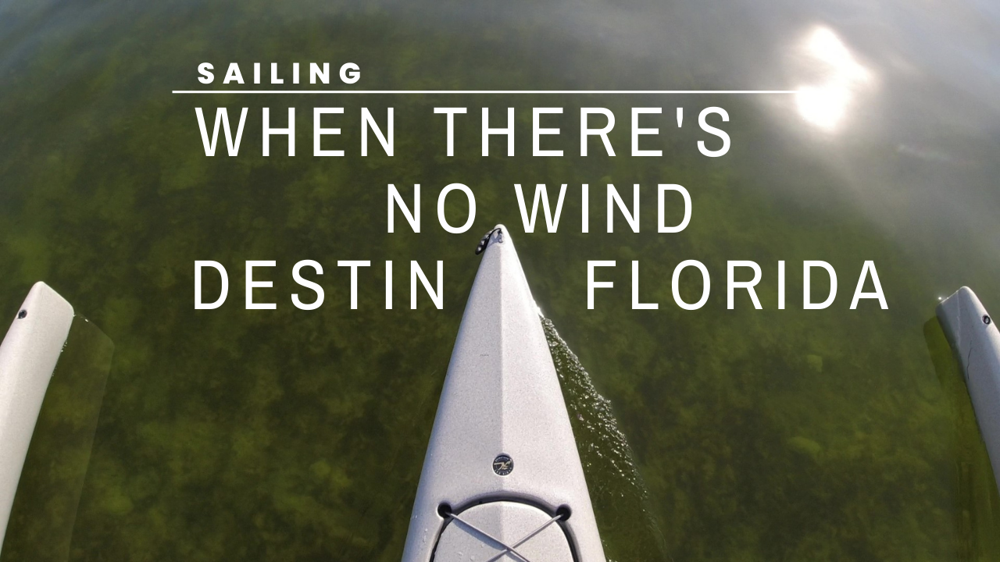
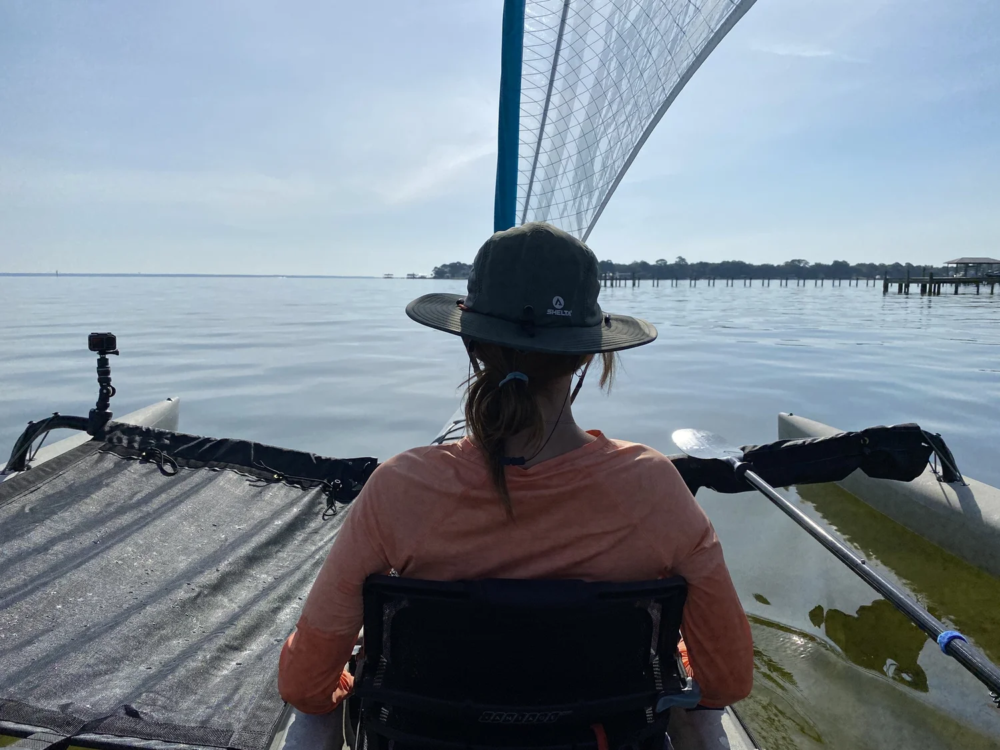
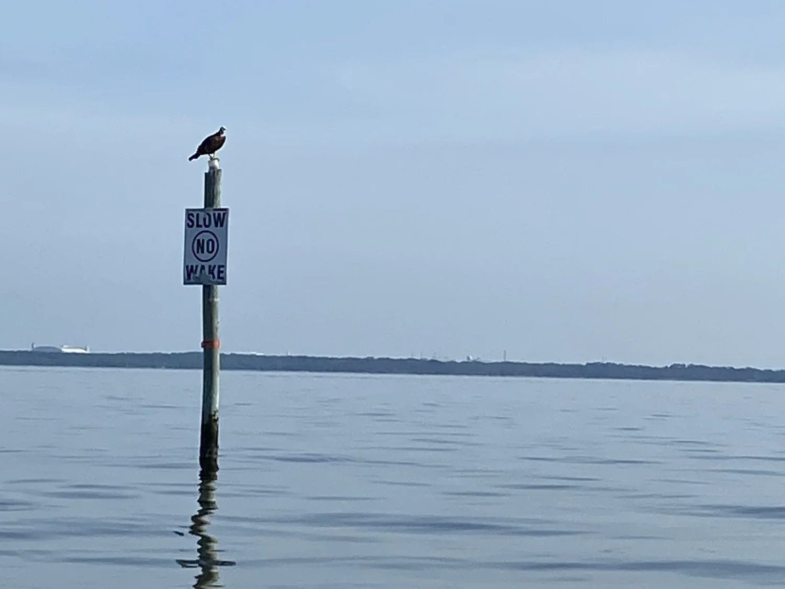
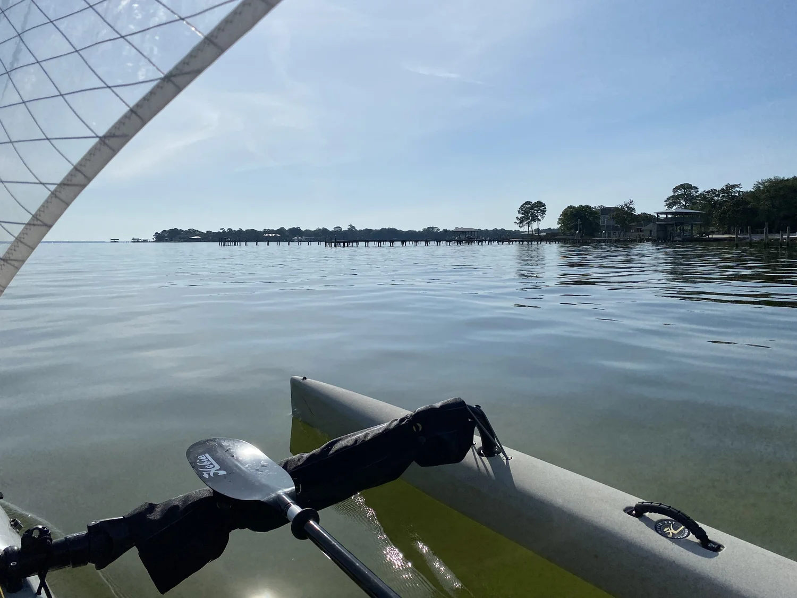

RELAX

Come with us as we take an early morning tour and learn a little about Joe’s Bayou while we sail into Choctawhatchee Bay in Destin, Florida.
 ▶ Watch on YouTube
▶ Watch on YouTubeWatch the video or continue to read. (More detail below. More actual sailing on the video.) Feel free to view both and enjoy!
How do you sail when there's no wind? What’s there to do?

We set out early in the morning while everyone else was still asleep. We were eager to set sail out from Joe’s Bayou into Choctawhatchee Bay in Destin, Florida.
But what do you do when there’s no wind?

For us, no problems at all on this sailboat!
With the Hobie Tandem Island Mirage Drive Kayak Sailboat, you can paddle and/or peddle too!
Or you can jump into the water and mess around out in the middle of the bay!
Come along on this relaxing sail and learn a bit about the bayou too!
